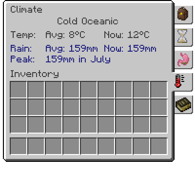

Calendário e clima
Em Terrafirmacraft, o clima e o tempo são fatores muito importantes. Vamos começar com o Calendário.
A qualquer momento, você pode ver o calendário pressionando E, e clicando na guia Calendário. Isso mostrará o Temporada, o Dia, e a Data.
A tela do calendário
Há estações, e o clima e o clima mudarão junto com eles! Há quatro temporadas em Terrafirmacraft, cada uma dividida em Cedo, MID e Tarde meses. As quatro estações são:
- Primavera: Março - Maio
- Verão: Junho -Agostot
- Outono: Setembro - Novembro(li)Inverno: Dezembro - Fevereiro
A temporada atual pode influenciar a temperatura da área, a precipitação (se chover ou nevar), entre outras coisas. Preste atenção à guia do calendário, será útil!
Agora, no clima...
Clima
Another tab on the main inventory screen is the Climate screen. This one shows information about the current location
From top to bottom, the screen displays the Local Climate, the Average Annual Temperature, the current temperature, the Average Annual Rainfall, the current rainfall, the peak rainfall, and the season when the peak occurs.

A tela climática
Temperature
A temperatura em Terrafirmacraft é influenciada por vários fatores:
- Em primeiro lugar, a região, especialmente a latitude (Z Coordenada) desempenhará o maior papel.
- Em segundo lugar, a temporada atual influenciará a temperatura - será mais quente durante o verão e mais frio durante o inverno.
- Finalmente, a temperatura pode ser diferente dia a dia, bem como variando de hora a hora.
A última linha mostra a temperatura atual, incluindo todos esses fatores mencionados acima.
A temperatura pode influenciar muitas coisas: se as colheitas e as plantas crescerão, se a neve e o gelo formarem ou derreterão e muito mais.
Chuva
Rainfall is influenced by a number of factors:
The region, especially the longitude (X coordinate) will play the largest role, with wetter climates generally to the east of spawn. Distance from the coast also plays a role, with drier climates farther inland.
The current season and local climate will also influence rainfall levels. These effects are also determined by the region: west coasts generally have dry summers, whereas the east sides of large continents have dramatic summer monsoons. The centers of continents and oceanic islands tend to have less seasonal variance.
The annual rainfall is measured in millimeters (mm) and can be between 0mm - 500mm, though the instantaneous rainfall can reach 1000mm in highly seasonal climates. Rainfall affects the types of flora and fauna that are found in an area, as well as how often rain and snow occur.
As chuvas também são importantes, pois afeta o que as coisas podem ser cultivadas em uma área. As chuvas são um dos principais contribuintes para Hidratação, que é uma medida exata de quão molhado o solo está em um determinado local e é usado por Plantações, Árvores frutiferas, e Arbustos de bagas para determinar se eles podem crescer.